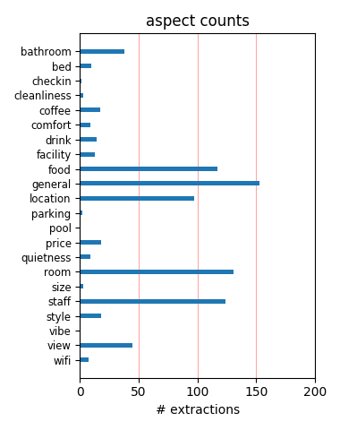
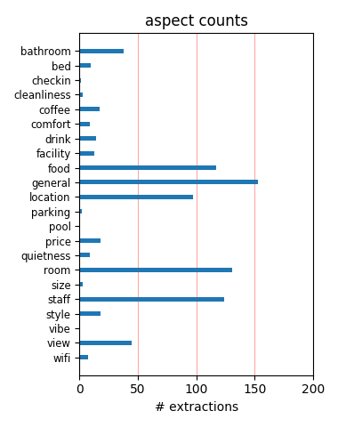

I thought this hotel was just perfect. We stayed in the Deluxe Double Room and were amazed at its beauty. It overlooked a canal and had an awning over the balcony. The chandelier was beautiful and the room was beautifully decorated. The staff was professional.
Actually ,I had unkowingly booked at the Locanda Remedio,which is attached to this hotel. Not too bad a place to stay-clean rooms,more like an attic. The shower needs a special mention- If your waist size is bigger than 42 inches,be warned:you may not be able to enter.
We enjoy the rooms on the first level that are right on the canal. Although, the rooms are smaller than those on the upper floors, it's so much fun to open the windows and watch all of the gondaliers coming down the canal. The staff is wonderful and the location is very convenient!
The hotel was a beautiful surprise. The service was outstanding. Unlike other hotels we stayed in in Italy, we were never treated as foreigners. The language barrier we experienced in many places was non-existent here. To compliment that, the room was beautiful and the location is perfect.
I stay here 1-3 nights of my trip to Italy depending on my schedule and it is always absolutely the best experience no matter what month it is. The staff is great, the hotel is lovely, always very clean and the location centraly located to St Marks square. I highly recommend this hotel. Ciao! Fiore
We have just returned from a break at the Colombina Hotel for my wifes birthday.Can I just say that we had an absolutely wonderful stay.The staff and the location were totally first class.If any body were considering a trip to Venice we would whole heartedly recommend this hotel.5 well deserved stars.
Our hotel was conveniently located two short streets off St. Mark's Square on the Bridge of Sigh's Canal. Very comfortable room, good breakfast, and the staff very helpful. Front desk booked Murano tour, gondola ride- picked up at hotel dock- so convenient. Only stayed two nights but best visit to Venice yet.
Stayed for two nights here last January on a city break with my partner. Hotel was in a great location, just few steps walk from San Marco and next to Rialto Great room and friendly staff also helped make our stay special. We are frequent travellers and I would definately recommend it and hope it never changes.
The location is perfect , close to the Piazza San Marco and Rialto Bridge. We made a great choise, the staff was friendly, principally Mr. Marco Ive who even tried to speak portuguese with us. The rooms are confortable and clean. My birthday was perfect in that place I'll never forget! Great city, hotel and people!
I have nothing but good things to say about this hotel. We stayed there for three nights at the end of August and had a room with a balcony. The room and hotel were both immaculate. The staff was very friendly and the breakfast was great. The hotel is located in a great part of Venice, right near Piazza San Marco. Simply amazing!
A 10 -- great location, wonderful room (303 or 306 -- can't recall) on Canal with two small balconies. Great staff - Alexandro, Marco & Lorenzo. Made our stay the best of Venice, Rome and Florence, after a good stay in Florence and a disapointing stay at the de Russie in Rome. I can't say enough good things, nor could my lady friend. David from Houston
The perfect location, near or within easy walking distance of many desirable sites to visit. Just the view from the bridge outside the hotel was enchanting. Nice restaurants nearby. The rooms had numerous exquisite details...small, but comfortable, quiet, and beautiful. Staff was very helpful and friendly. We will definitely return! Highly recommended.
We arrived at the hotel and were greeted by very friendly staff. The hotel was immaculate, and our suite was spacious. The location was perfect; it was right on a canal. Marco at the front desk was very helpful and always willing to recommend restaurants and sites. We will surely come back to the Colombina Hotel again in the future. We highly recommend it!
Our first time in Venice for myself and husband. Celebrating 30th anniversary. Wonderful city. The hotel was marvelous. The proximity to St Marc ideal. Wonderful view of St Marcs Dome and the Bridge of Sighs. The room was lovely and spacious and the staff friendly, helpful and welcoming. An ideal place for a special occasion. Thank you Colombina. I & A Brown Uk
Had a great stay in Venice at the Hotel which was only a few minutes walk from St Marks Square. The room was good and better than most I have stayed in over the past ten years. The Staff were friendly and helpful. The hotel was obviously well cared for as it was always clean. The breakfast was plentiful with a good choice of food. I would highly recommend this hotel. Pat Fyfe
Hotel Colombina is in a perfect location, a 2-minute walk from St. Mark's Square. The hotel is charming, and our room was immaculate. The staff could not have been more pleasant and accommodating. They even had someone waiting when our water taxi arrived from the airport, and he wheeled our bags to the hotel and carried them in for us. Breakfast was good. I recommend this hotel highly.
The Colombina Hotel is a Great Hotel, with an excellent location, just a couple of blocks from St. Mark's Square. It is a charming hotel, nicely decorated and very cozy. We had an attic room on the 4th floor with a stunning private terrace with a beautiful view of St. Mark's Cathedral and Ducal Palace. The staff was very friendly and helpful. The service is 5 star. I would go back to the hotel.
We stayed in the two bedroom Fenice Suite in July. Perfect for our family of four. Hotel was beautifully decorated and the staff was extremely helpful with recommendations of restaurants. The location is perfect, with just a few minute walk to both St Marks and the Rialto Bridge. We took a private water taxi from the airport and were dropped off at the hotel's dock - very convenient after a long flight.
We stayed at the annex of the Colombina Hotel, which used to be Locanda Remedio Hotel. Our room was very nice, with silk-lined walls and real antique frurniture, it was also very clean, with a decent-sized bathroom, especially considering that we were in Europe. The breakfast was excellent, and the lady made amazing cafe au lait. Also, Colombina has a winning location, it is very close from Piazza San Marco.
Stayed for a long weekend at the Colombina which was discounted via Expedia. It was only about 2 mins from St Marks Square and 7 from Rialto, so location is perfect. The room was a standard double so no view over the canal but the room itself and the bathroom were both really big and well equipped, although no coffee or tea in the room. Breakfast was plentiful and fresh.The staff were really friendly and helpful.
The hotel's location is a 10. Very close to San Marco Square, short walk to the San Zach Vaporetto stop, 10 minutes to the Rialto. The hotel staff is very helpful, but beware they will send you to a fairly close restaurant, Carlito's, which our one meal there was dreadful and there are so many excellent restaurants in Venice. The rooms are clean. I rate this, not as a luxury hotel, but an outstanding tourist hotel.
We had a lovely stay at the hotel but they forgot to give us our passports back. When we realized it, they took NO responsibility for the oversight, and would not help pay for the 500 Euro emergency courier fee they charged to bring our passports to the border crossing into Croatia. if it weren't for that, we would have gone back. Buyer beware, and do not rely on them to return your passport. Signed, Happy but broke!
This hotel, is right in the center of venice, very close to the marcus square, and easy to find. The bulding and the interior is an experience in it's self, the breakfeat room is superb decorated.. the rooms are big and very nice furniture, with aircondition etc.... our hotel had a window to 'nothing' which were the only downside.. can highly recommend this hotel.. Pictures from the breakfeast room, and outside the hote.
We stayed here for a couple nights during our honeymoon to Europe and we loved this hotel! It was so fancy and classy! The rooms were smaller but it was expected since all the hotels are mostly renovated buildings in Venice. Its nicely located close to St. Marks square and has a nice little loading dock for a romantic gondola ride at it's doorstep. We loved it and I highly suggest staying there. very nice and has a great breakfast.
My husband and I stayed here from May 14-17, 2005. We loved everything about this hotel. The room was comfortable and very clean. The staff was very friendly and helpful. My husband particularly liked the breakfast in our private terrace overlooking the Bridge of Sighs. Probably the best part about the hotel is it is steps away from St. Mark's Square but far from the crowd. We will definitely stay here again if we are ever in Venice.
My husband and I spent 3 nights here in November 2005. We had lots of luggage so we took a private taxi at the end of the pier. It cost us 95,00 euro from the airport each way!!! We had a deluxe room on the top floor that overlooked the canal and the St. Mark's church. We really enjoyed the hotel, it is nice. The room was good size and nicely decorated.The bathroom was nice.Breakfast was nice and the staff was very pleasant.I would recommend this hotel.
Great little hotel, did the trick when I first met my girlfriend took to this lovely hotel for a romantic getaway although this was some time ago, fantastic location had a room overlooking the canal not sure if they all do so added to the experience, only problem was although not due to the hotel was that Venice had flooded the day we arrived but added to the fun. Can not fault this place really liked it and staff very helpful, good breakfast aswell. Very very good location.
Just to let you know how much we enjoyed the Colombina. It's a charming pleasantly small size hotel with very personal and efficient service. Our room (400) was more than comfortable, had a lovely view which is always important. We also appreciated the very special welcome of fresh fruit. The breakfast room is one of the prettiest we have seen and everything in the hotel is impeccably clean. All in all it's been a most delightful stay and we will recommend it to all our friends.
Wonderful hotel and location and all we could have possibly wished for. We had a room with a canal view which was just beautiful. The staff were very helpful with all our inquiries and the breakfasts were very good and served in a delightful dinning room. We were so close to all the attractions in Venice and spent our three days walking everywhere. We would highly recommend this hotel to anyone and would not even consider looking for alternate accommodation when we return to Venice.
We stayed at the Combina hotel in Venice three nigh in June 08. The bath drain (U-bend ) was blocked. It was not repaired before the last night of our stay and this despite us informing the service desk regularly. They didn't offer us another room. The hotel manager refused to offer us a compensation. This lack of hygiene and respect for the customer is not acceptable for a hotel, particularly a 4 stars hotel. We will not return to this place and we advise our accountancy to avoid it too.
We spent two days in Venice at the Colombina Hotel in Venice last May and we had a fantastic time in a magical city. Venice is really something impossible to describe, centuries years of art in such a small place ! The Colombina is a small gem in this magic. The location is just great, St. Mark's is few steps away and there are some good restaurants in the area. We had a very nice and clean room overlooking a quiet courtyard. The room was not so big, but confortable. All the staff is very kind and helpful.
How can you fault such a cozy quaint hotel right on the lagoon! You cannot! We loved the hotel. Room was decorated to perfection. Windows overlooking the lagoon made you feel like you were really on the water . You could open them up and sit on the edge (not sure I was suppost to but did) and watch the boats go by. So close to the main square and action but yet very quiet. Breakfast was done very nicely. No waiting and all the basics and freindly service. We had our teenage son so a cot brought in and still roomy.
We are just back from a wonderful weekend in Venezia. The Hotel is in a great location near the happening spot of St Mark's square, traditional decor, clean, quiet and comfortable rooms. The staff are really pleasant also, especially the always smiling night porter :-). All in all a great package. Qualities: Quiet & clean large room (in the annex building). It was a freezing weekend but the hotel was always a pleasant temperature throughout. Excellent value. Buffet style breakfast. Plenty of choice. Pleasant Staff.
We stayed at the Colombina at the end of January. The hotel was great! It was quite easy to find and the location was so close to st marks square and the vaporetto stops. The service from the hotel was superb and the breakfast in the room made life very easy. We ended up with a room with canal view. The hotel was immaculately clean and the staff always willing to help. The hotel is ideal if you want to be near the the centre without the noise at night and conveniently located for all main attractions. I will highly recommend this hotel !!
Booked 2 rooms at Hotel Colombina in advance and requested rooms side by side. When we arrived they gave us one dingy room that smelt with no view and the room was very warm. My husband did not want to stay here. The second room was larger but also looked like it hadn't been used much. We went to the front desk and requested another room. The only suitable room for my husband and myself was two floors up and at an extra cost of 80 euro per night. They could not accomodate rooms side by side that were suitable. Would not recommend this hotel.
Excelent Hotel. An amazing location . Our Room was an attic room, beautifull and very comfortable, however the tub was a little unconfortable. It had a view of the Plaza San Marco. Breakfast was great and very well attended and included. Take advantage of the "Complementary" trip to murano. It includes a tour of a glass factory and their showroom and you can come back to Venice on the Vaporeto, the public water bus. great restaraunts around and also a small grocery store. But like evrything in venice be ready to carry your suitcases, everywere..
We arrived by water taxi from Marco Polo airport which only took 20 minutes, wish it had taken longer! Very easy as the Hotel has its own docking. We were initally disappointed by our room size as we were in the annexe and it did feel slighly claustraphobic but we didn't spen too long there as the sites of Venice were right on our doorstep. The Hotel was spotless and the breakfaxt was very good. Watch out for the trip to Murano glass - we were tempted to buy a piece but found it was much cheaper in a shop at St Mark's square and their prices are infamous!!
we found the Colombina in the Karen Brown's guide 2005 and we spent two nights in December. Following the suggestion of the Hotel Manager, we reserved a room with canal view (room #202)and we loved it !! Good size room, clean and warm. Regarding the staff, ignore all the bad reviews, we found them polite and helpful. Venice is a wonderful magical city. do not miss the typical fish market near Rialto Bridge, but go there very early in the morning. It's amazing! thanks to the English Trip Advisor Member: we forgot about the idea of "good value" and we relaxed !!!
On our recent stay, we had a delightful experience at the Hotel Colombina. Our room was decorated with antique furniture, fabric covered walls, a marble bath and shuttered windows opening on to a little used canal. There is a bridge over the canal almost at the hotel's doorstep that quickly leads to a street filled with restaurants and on to St. Marks Square and the Grand Canal. Breakfast offers a variety of things to eat in two well appointed dining rooms. The staff was courteous, helpful, and professional. Overall, we were happy with our choice of hotel in Venice.
We stayed at the Locanda Remedio before joining a Royal Caribbean cruise, from the minute we stepped of the water taxi, straight into the hotel, we knew we had made a great choice, very helpful and friendly staff and a lovely room with some very expensive looking furniture and plenty of room for the three of us. The breakfast next morning was very good, a lovely cosy and well decorated breakfast room and a great choice at the buffet. The location is perfect, you step out of the hotel, across one bridge around a couple of corners and there is Piazza San Marco. Wonderfull!!!
When we checked in, we were given a room in the annex (Remedio), which was disconnected from the main hotel on the canal. We didn't know at the time that rooms in the Remedio booked for 100 Euros or more less than the Colombina. After paying for the Colombina (at almost $500 USD per night) and being switched to the Remedio, we were told by hotel staff that we couldn't eat breakfast in the Colombina portion of the hotel because we were staying in the Remedio. After our trip, we appealed to the hotel management to refund the difference in room rates but they were non-responsive.
Our room (and the rest of the hotel) was beautifully decorated and spotlessly clean, with shuttered windows opening onto a pretty, quiet canal. The turn-down service each evening was a nice touch . Breakfast was plentiful with a variety of rolls, juices, fruit, cheese etc and hot coffee or tea. Reception staff are friendly, efficient and welcoming. There is a cosy small bar where you can read the papers and enjoy a drink. It is located about 5 minutes from St Marks Square and , although tricky to find initially, full instructions are given on website. No hesitation about returning!
This hotel was recommended to us by some travellers we met in the summer. We had an excellent room with a small terrace - a great bonus in the summer but not much use in November - however no one to blame but myself on this one. All in all a good stay but cannot say that I would rave about it and probably will not go back. Rather expensive for what it is - but I guess that is what you get in Venice. We had a dinner recommendation for our first night - did not ask for any more after that! Well situated for St Mark's etc but could probably do better a little further away form the centre
What a great location - just behind St Marks Square, right in the thick of it all! Hotel staff friendly, the interior is lovely and very venetian. Only 1 very small gripe which was continental breakfast, not really a great selection, but italian coffee was excellent. Don't expect anywhere cheap to eat in the vacinity, you'll have to travel out on the vaporetta to get a 3course meal and a bottle of wine for the same you pay for 2 pizza's and 2 drinks around St Marks - watch out for the seating charges (can reccomend Dosodoro for cheaper eating, think it was St Margarita's square). Venice - what a great place!
We wanted to write to let you know how much we enjoyed staying at the Hotel Colombina. After an exhausting sojourn in Roma, your facility was wonderful. The front desk staff was attentive and most helpful. They graciously answered many questions. The Hotel is beautifully designed and equipped. We especially enjoyed the lovely breakfast room. The location is outstanding and when we return to Venice we will definitively stay at the Colombina. Thank you for providing such lovely accommodations in Venice. We also enjoyed the coffee your served. The best ever !! We look forward to stay with you again the next time we are in Venice.
Convinient location though it's hard to find the hotel from the train station. We were dropped off at St Marc Square station and even the police officer did not know where the hotel is. It's an old hotel but very clean, need to get some modern furnuture though. We were forced to check out at 10.00 AM instead of the regular check out at 12.00 noon because the hotel is sold out and have some early arrival that day, which is very inconvinient for us. Our train does not leave till 3.00 PM. It rained most of the time while we were there so the water smells like a sewer. March is not a good month to go to Venice because it rain most of the time.
I found the Hotel Colombina to be a wonderful experience. It was my first time in Venice and the city is just beautiful. I was just as impressed when I arrived at Hotel Colombina. The staff was so helpful and extremely pleasant. They were very informative about tours and restaurants to go to. The room was just lovely, very clean although small, it was tastefully decorated and had a lovely terrace. The breakfast was wonderful and elegantly served in the dining room. My whole experience with the hotel and the City of Venice was so enchanting and I would definitely go back again and I would definitely recommend and stay at the Hotel Colombina again.
Have stayed there several times, and have used it twice for my tour groups. The staff couldn't be nicer or more accommodating. While not huge, the rooms are very confortable, bathrooms are beautiful and well appointed, and the buffet breakfast is varied and satisfying. I stay here whenever I'm in Venice (every other year) and they treat me like family. The Colombina has an annex (The Locanda del Rifugio) ....a small hotel attached to the main one. It's very comfortable, aand has lower room rates because the rooms are smaller, there's no bar (if you want a ddrink, you go next door), and the buffet breakfast is much simpler. An excellent value overall.
The Colombina could not have been better. We spent a week-end during carnivale and the location of this hotel was fantastic. The hotel is only a few steps walk from St Mark's Square and Rialto Bridge is only 5 minutes away. The reception staff and waiters were all charming and helpful. The room was large with a big, comfortable, double bed and elegant furniture. Following the suggestion of the concierge we wandered around the city early in the morning, before breakfast and we discovered magic city. We loved so much Rialto area and the picturesque fish market. We stayed 2 nights there and did not want to leave. Venice during Carnivale is really magic.
We made our first visit to this hotel in 2002 and have been back to it twice more since then. On our first visit we had lovely large room with a decorated ceiling and jacuzzi bath. Our room has gotten progressively smaller on each subsequent visit but have all been decorated just as beautifully with fabric panelling on the walls and beautiful woodwork. Wouldn't hesitate to return. Breakfast is a cold buffett of ham, cheese, rolls, croissant, etc. Not hugely exciting but serves it's purpose. Hotel arranges a gondola trip for it's guests each day so worth asking about as if you don't mind sharing with other guests makes it an affordable way to have a gondola ride.
This is a wonderful hotel. It is a 3 minute walk from San Marco Square and less than 10 minutes from the Rialto Bridge. The staff could not have been nicer. We arrived on a very busy weekend were given a room we did not like, while nice enough it had a view of cement and brick walls. I was pretty upset, but Alessandro put us in a fantastic room with an even better view. The room change made everything perfect for our stay and we can’t thank him enough. I would recommend this hotel without reservation except for the basement room in the annex; don’t book it. If you go, please say hello to Alessandro from the Taylors. We loved our stay and can't wait to return.
Location of this hotel is excellent. They have a dock that you can arrive/depart from by water (Perfect if you don't want to haul luggages everywhere). The staff were very nice and helpful. No wifi in the rooms, you have to go to the lounge area and you only have 30 free minutes. Not that expensive if you want more time though. The room was sorta clean and incredibly tiny! We had to move our luggages around all the time. Bathroom was a decent size and very functionnal. When you start walking around in Venice, you realise that the room size is not that important since you're never in it ! The city is magical. Overall, this hotel is good value for your money. We recommend it.
Pretty little hotel with friendly and helpful staff. The location is perfect - really close to the main action and yet situated on a peaceful side canal so you get a good nights' sleep. We got a great deal on Last minute.com. We paid a supplement for a deluxe room which was probably worth it. The room was a bit on the small side but we had a lovely view over the canal. There was a complimentary boat trip to Murano each morning which we were unable to take advantage of. Be aware that there is no terrace or outside area at this hotel - a common feature at most of the smaller hotels we saw. All things considered, this hotel is a very comfortable base for a sightseeing trip to Venice
My husband and I stayed at the Columbina in May and loved it. The location is fantastic, just 2 blocks away from St. Mark’s Square and right on a quiet canal (the same canal as the famous Bridge of Sighs). The hotel staff was incredibly helpful with dinner recommendations and even called to see if the special was fresh before they made us reservations. Our room was beautiful with comfortable beds and a large bathroom. Turn down service was nice and included charming little touches like the next day’s weather forecast. The breakfast was very nice with a large selection of yogurts, breads, cheeses, and fresh fruits. This was a fantastic hotel and we would definitely stay there again.
What a great hotel. From our arrival by boat (what better way in Venice!) to our very comfortable room, to the awesome porters and Front Desk staff, to the exceptional location (meters away from St. Mark's Square). The staff at Hotel Colombina provided great service from the moment we arrived. Our room was right on the canal with one of only three (small) balconies overlooking the canal. The rooms were quiet, though we could hear a lot of chairs scraping across the floor above us (thankfully not too late at night) and very dark (with shutters closed and shades drawn) and the temperature was quite comfortable. Zero complaints and I would absolutely stay at this hotel when again in Venice.
Stayed two nights in Jan, location was good , however staff not very pleasant or helpful. First morning woke to sound of builders around 7:30am banging on walls in hotel ( not something you would expect from a 4 * hotel) Also breakfast was not as good as other hotels we stayed elsewhere ( fruit salad was stale to say it kindly).Rooms v. small & you could also hear people staying above so bring the ear muffs!! Staff highlighted on 2nd night that we were to be out by 11am, not even asking how we were finding our trip which was rude while the hotel TV channel said a 12 checkout time...... Also no irons and if u needed somethin pressed it would take 1/2 day plus 4.30 euro for a shirt or more..
My wife and I booked three nights at the hotel. Upon checking in we were informed that the room we booked in the main hotel was not available due to a sick guest who had to stay an additional night. We were given a shoebox sized room in the annex section for the first night, but received an upgraded room in the main hotel, with a canal view, the next two nights. The difference was like night and day. A canal view room in the main hotel is a must! I would rate the larger room a 5 and the smaller annex room a 1. This is why my overall room rating is 3. The staff were friendly and helpful. The location was perfect for our stay in beautiful/magical Venice and we enjoyed our stay once the room problem was resolved.
We stayed at the Hotel Colombina for 3 nights on a couples mini-break. The location for a Venice first-timer cannot be matched - Piazza San Marco is minutes away, the Bridge of Sighs arches over the adjacent canal and a multitude of bars, shops and restaurants are on the doorstep. The decor is a bit tired for a 4-star hotel, but the rooms are clean and a good size and staff are friendly and helpful. An upgrade to a Canal View room is well worth it - we could see the city waking up, boats and gondolas traveling up and down, locals going about their daily business. We could see right down the canal to the Bridge of Sighs and even had a glimpse of the top of the tower in San Marco. Overall, a really pleasant experience.
We spent part of our honeymoon in Venice, early June 2010. My new husband had stayed at the Colombina Hotel before and appreciated it's charm, as well as the good location. He reserved a room for us, securing the only one that had a rooftop terrace and view of a canal (there is another room with a terrace, but no canal view). The room was small, but very nicely appointed. The staff was extremely pleasant, very accommodating and their command of the English language was very good (nice, since we speak very little Italian). They even recommended a couple of very nice restaurants which were nearby and not too expensive. The only negative was the firmness of the bed - after 3 nights we were glad to give our backs a rest!
The service at the hotel was fantastic. The rooms were clean, well maintained, and a good size for a hotel in Venice. The people at the front desk were very helpful in making reservations, giving directions, providing recommendations, and providing assistance in anyway possible. We stayed two nights for our honeymoon and couldn't have asked for a better experience. The hotel is located on a quiet canal and side street, but is very close to all the sights. It was a little hard to find the hotel, but if you haven't been to Venice you will soon learn everything is hard to find and that is half the fun. When I find myself in Venice again I will make sure to check to see if there is availability at this hotel before looking elsewhere.
Hotel Columbina was recommended to us by our good friends. They stayed there three times. We requested and were given the same room overlooking the canal where the Bridge of Sighs is located. (and under repair). The room was beautiful and comfortable. The hotel has a cozy living room and charming bar area. We had drinks in either place each afternoon before going to dinner. If you spent 10 Euros on drinks, you could get 30 minutes of free wi-fi internet, which was great for us with our wi-fi phones! We thought the breakfasts, which were included in our stay, were delicious and nutritious. The staff was very friendly and accommodating. The location is excellent; only a minute from San Marco and not far from the Rialto Bridge and Market. We would definitely stay there again.
We booked this hotel as part of a flight & hotel deal through expedia.com. The desk staff and bellman were all extremely welcoming. Our room was small but very clean and comfortable. We booked on a bed and breakfast basis and found the buffet to have a reasonable selection of cold foods. There is a lounge area just off the main reception area where we sat every evening for coffee and met some of the other guests. Finally, there is a dock right outside the hotel so you can take a water taxi directly to the hotel if you wish. However, the hotel is a maximum of 5 mins walk from San Marco piazza, so it is in easy walking distance to the airport vaparetto/waterbus which is a much cheaper way of transferring. Overall, a very cosy and friendly hotel. We would definitely stay here again.
A very pleasant stay in a hotel that was easy for main sights . The staff were extremely helpful and the room was spacious , very clean and a good atmosphere. Excellent breakfast buffet with great variety. Be prepared to walk in Venice. Eating out is very expensive and choice limited. Walk off main tourist track for best meals. Grand canal trip on ACTV is 6.50 Euros and best way to see sights. Gondolas are very expensive. Be prepared for at least half a day in Doges palace...lots of walking but well worth visit. Good views of San Marco square from terrace of Basilica 4 Euros. Coffee in square very expensive 15 euros. Trip from airport san marco by alilaguna 25 euro return takes 70 minutes each way but good. airport food good. Venice well worth a visit...tiring but an amazing experience.
My husband and I went to Venice for our Honeymoon in July 2006. We expected great things from the hotel, but were a little disappointed. We requested a special room since we were on our honeymoon, but had a view of a wall from our window and barely enough room to move in our room around the queen-size, rock-hard bed. There are great rooms in the hotel, as we found from another guest staying in the hotel at the same time us. The service was excellent and the staff was very eager to assist us. (They spoke English, which was nice.) However, one night we asked to be directed to a casual dinner spot and they sent us to a place were we ended up having to pay over $200 for a meal. If you choose to stay here, don't pass up the breakfast - the jelly-filled croissant rolls are to die for!! Have fun on your trip!
My husband and I spent two days whilst on a short break in Venice. The room was extremely clean, updated and tastefully decorated in Venetian style which I really loved. The only small negatives were that it was rather dark and a little small. Also the bed was very hard but by the second night I had got used to this and had a good nights sleep. It would have been useful for tea/coffee making equipment to have ben provided. However there were many more plusses than negatives. The staff are extremely helpful, friendly and professional. We had a lovely chat with the barman one evening – what a friendly man! A concierge helpfully gave us directions to a recommended restaurant for a good fish supper. The breakfast room is warm and welcoming and the breakfast provided was absolutely fine. I would recommend this hotel.
I chose this hotel on a whim when knowing nothing about Venice or what to expect. And wow, did it ever pan out! Yes, it's pricey, but if you go to Venice, you have to stay in the heart of the action. In this case, it's perfectly located within only a couple of blocks of San Marco Square and so many wonderful shops, restaurants and museums. Yet, it was quiet enough that we slept late the first morning, still trying to get over our jet lag. We stayed in a canal view room (you must!) on the fourth floor and could open our shutters, look down and see and hear the gondoliers and activity of Venice (see photos). Yet, when you closed the shutters and curtains, it was dark and quiet. The staff was so friendly and helpful, and always available (night and day). If we return to Venice, I wouldn't consider staying anywhere else!
We arrived in Venice to 40 degree weather and a forecast of rain. Luckily we had booked a past favorite hotel, the Colombina. One of the best qualities of the hotel is its location just behind St Mark's Basilica on the same quiet canal as the Bridge of Sighs. After walking all day, it's an easy stroll back to the hotel. Also close are all the vaporetti stops just about 3 blocks away. Another wonderful trait of the hotel is the staff. The clerks behind the desk are supremely professional, know every detail of the city, and are sincerely motivated to help. We had booked a room in the main hotel, but due to the illness of another client, we were shown to a room in the annex. It was huge, with 20 foot ceilings, silk-covered walls, and luxurious fittings. Although we weren't on the canal as we had hoped, we loved the room.
We loved Venice and our stay at the Hotel Columbina. We stayed in Room 401--on the rooftop. We had our own private balcony surrounded with flowers. We could sit and look out over the rooftops of Venice--truly amazing. We could also look down on the canal and were never short of gondilers singing as they went past the hotel. The service was excellent. We received great recommendations for lunch and dinner. The front desk arranged for a tour of Murano and also for our gondola ride. Everyone was very pleasant and most helpful with directions. The location of the Columbina was perfect...only minutes walk to St. Mark's Square and many, many shops! If you take a water taxi from the airport, make sure they drop you at the steps of the hotel. If you are not familiar with Venice, it could be quite a challenge to find the hotel.
My wife and I stayed in this Hotel in April. We didnt really know what to expect beforehand and we were very happy when we got there. Our room was at the very top of the Hotel . The room was spotless and well decorated with stripped Beams throughout. The Beams were a little low but after banging your head once you probably wont do it again. The beds were turned down every night and slippers left out. But best of all in this room were stairs up to our own Patio/Veranda with an amazing view over the Venetian Rooftops and all within a very short distance of St. Marks. The Hotel location is very central. We found the staff ( except one Barman) to be very helpful and pleasent and the Breakfast was good too. Overall a great experience and would recommend this hotel to anyone We would stay in this Hotel again if going to Venice.
My friend and I stayed at this hotel for two nights in September. It was our first stop in Italy and US Air lost my luggage. The staff was exterememly helpful in making all of the necessary calls for tracking purposes. We were so tired when we arrived, they also refreshed our towels after we showered--they typcially don't do that until the next day. Then, I left my reading glasses behind, which they sent on to our next stay. I was very appreciative off their efforts to make our stay pleasant despite my lost luggage, which I did receive before we left. The hotel is in a great location, just behind St. Marks Square and just a five minute walk from the vaporetta station at S. Marks. The rooms in the annex are small, but the bathrooms have great showers. The breakfast for guests in the Annex is very adequate. I would stay there again. It's a gem!
This is a nice little hotel in a great location just a couple of minutes walk from St Mark's Square. The staff were friendly, helpful and spoke excellent English. Our room did not have a canal view, but was a good size and clean, with a nice clean and quite spacious bathroom. The furniture in the room was a bit chipped but there was a stunning chandelier and the walls were covered in damask. Breakfast was served in a small dining room but there was a good choice of cold meats, bread rolls and pastries, yoghurt and limited fresh fruit (but it was March). Again, the waiting staff were helpful and there was plentiful tea, coffee and fruit juice. We did not eat any other meals in the hotel as you are so well placed to go out and explore the city. The best thing about the hotel was the location, my least favourite thing probably the slightly chipped furniture!
First I would like to say that my wife and I are well traveled and extreamly fussy. We first stayed at the Colombina in August 2009 with our 7 year old son and found the Hotel Colombina the best hotel we have stayd at. This time my wife and I went to Venice on a business trip and the company we were with put us in another hotel. We went to the Colombina when we arived in Venice to see if we could book in as we didnt like the other hotel. As before the Colombina staff were extreamly helpfull and with short notice booked us into the same room we had before, room 201. This room over looks the canel from the bedroom and a balcony off the bathroom overlooking a garden court yard. We had many a wines on the balcony. Colombina is a very romantic Hotel and we will go back again. We have recomended friends and they had the same expirence. Well worth a stay and a great location.
After reading the wonderful reviews about the Columbina Hotel, I decided to switch my reservations from a nearby hotel at the last minute. Big mistake! Rude staff that were very condescening was how we started our stay. The air conditioner did not function properly so the room was very stuffy and musty. We heeded the sign on the window saying "do not open due to mosquitoes" but my husband and I were still bitten alive at night. Other guests had similar problems as there were six blood stains on the walls from smashed mosquitoes. We had three huge cobwebs hanging from the rafters and when we moved the air conditioner cover to try and get more air, we found huge dust bunnies that were hiding! The breakfast was average even if it was set up late and only had four available tables for the entire hotel. This is definitely not a four-star and definitely not worthy of the hype from other travelers!
We have just returned from staying 2 nights in this fabulous hotel which we couldn't fault. We have paid alot more in other hotels in the past and not been as impressed. As others have said the location, staff and rooms are all fautless & the Buffett breakfast was all fresh food with a good choice. There are plenty of bars and restaurants nearby and the staff are happy to recommend and make bookings. We took advantage of the private dock and took a water taxi back to the airport from the hotel which made a great end to our stay. I would disagree though with a couple of comments made by others. The staff are happy to make suggestions re taking trips etc but are not at all pushy if guests don't want to take these. In addition the furniture is designed to blend in with the rest of the decor which it does perfectly and elegantly rather than just being old and in need of updating which has been suggested.
This was our first trip to Venice, and we are not sure how other hotels would compare. But overall, we found it challenging to lug our bags to the hotel from the port, having to cross over multiple briges with lots of steps. We could have taken the water taxi directly to the hotel's front door from the airport, but that would have cost approx. 90 euro. The hotel itself was beautiful and charming, but no elevators. Again, if you are travelling with heavy luggage, this is a challenge. The rooms were kind of small, but cozy. I would expect that is the norm in Venice. The breakfast was enjoyable and the dining room was nice. The hotel offered free shuttle service over to Murano (but not back), and also tried to organize other outings for the guests, too. The best thing about Colombina is that it's quite close to St. Mark's square. overall, we had a pleasant stay, but would probably try to find somewhere closer to the port next time.
The Colombina is a well maintained and well situated hotel just a short distance from San Marcos Square. The linens were fresh and the room was clean and in good condition. The bathroom was up to date. and also appeared clean. Our room decorations were very Venetian -- large crystal chandalier, luxurious fabric covered walls, and marble floor. Some rooms overlook a canal and some face the street. The breakfast buffet was just OK and the breakfast room was just OK too. This said, it is is still a good hotel for it's price range based on what I have heard from other people who have visited Venice. The hotel is pretty close to the San Zacharia vaparetto stop -- very helpful because the water bus to the airport stops here. The hotel staff suggested a water taxi (90 euro!!) to the airport but did not inform us we could use the nearby waterbus for just 12 euro per person -- fortunately we checked this out on our own. Leave about 1 hour+ for the aiport water bus. Overall, the staff was pleasent.
We stayed at the Hotel Colombina in November. we had booked on the hotel website and gotten a rate of 180 euro for the last minute booking, which I think is much better than the ststed rate of 395. We had a huge living room, bathroom and bedroom - so a lot more space than we thought we would get. We really enjoyed our stay and thought the hotel breakfast was lovely. The only thing that marred our stay was that we were out late one night and we had a friend with us (staying at another hotel), he could not find his hotel and eventually we told him to sleep on the sofa in our spare room. The hotel apparently has video cameras everywhere and threatened to call the police if he did not leave. We asked them to help him to find the hotel but they told us that that was not their job and as far as they were concerned he could get lost in Venice. I obvioulsy do not approve of this approach and for that reason would not stay there again. However, similarly, I can understand if this is not an issue for anyone else booking a hotel.
My (now) husdand and I got married in Venice earlier this year and chose the Colombina due to good reviews on this site and a fairly decent price found on another website. We were loooking for a fairly central base as we had family and guests coming over for the wedding but also wanted a decent hotel that would not break the bank. The Colombina answered on all levels and provided a thoroughly enjoyable base for out stay in Venice. Within minutes walk of St Marks Square it is impossible to get lost and also very handy to explore the delights of Venice. The breakfast was extremely enjoyable and the service very consistent. However, perhaps wedding parties are the norm in Venice as the staff did not show any interest or excitement on our big day- even our Venetian based wedding co-ordinator commented on the lack of enthusiasm. Despite this we thoroughly enjoyed our stay and if you are looking for a well placed central hotel providing good service and a high standard of accomodation for a reasonable price then look no further.
Traveled to Venice with 4 friends so we booked two rooms at the Hotel Colombina, one double room and one triple. Although we knew one would be in the annex, we did not realize how different the two rooms would be. The triple in the main hotel was very large, beautiful bathroom, window to open, while the annex was much smaller, darker, and a very small bathroom. The one thing we did not know was that the two groups would not be permitted to eat the complimentary breakfast together, the annex group had to eat in the annex, while the hotel group ate in the hotel breakfast room, dissappointing when trying to plan out the day. Also the hotel room received slippers, turn down service, and a few other little extras, which the annex does not, certainly disappointing for the annex group who paid the exact same amount for the trip. So, if at all possible make sure to book the hotel room, not the annex which really felt dungeony. Besides that, the hotel was in a perfect location, and all staff was very friendly and extremely helpful.
We loved staying at the Hotel Colombina. The small size meant the service was incredible, friendly, and very personal. The rooms were very clean and very nice, decorated in a Venetian style. Some rooms overlook a small canal, where it's fun to watch the gondolas and taxis drive by, or get picked up by one right at the hotel doorstep. The walls are also about a foot thick, so once you close your door it's impossible to hear anything from outside; I slept like a baby. The hotel is located 30 seconds from the Piazza San Marco, Venice's tourist center, so there are a thousand tiny, delicious restaurants, plenty of great shopping, and hundreds of incredible tourist destinations within walking distance from the hotel. Marco and Lorenzo, the two coolest hotel managers/concierges in the world, helped us find great restaurants and shops and attractions every day during our stay, and they helped us stay updated on the world cup! The rooms were great, the service was great, and the location was great. We couldn't have been happier with our stay and we had a lot of fun. Thanks Hotel Colombina!
The first room that we were given was an 'attick' room and we could not stand upright. The lift stopped on the floor below! It was claustophobic. There was a terrace but what good is that when you are stuck in a room (there is little entertainment in Venice). The next room we were given was in the Remedio - the annex. It is only 3 star but we got no refund. The staff in reception told us the the picture in the Venere(-) site was not even their rooms! That seccond room was dark and awful. The 3rd and last room we were given was about 3 star okay ish in intial appearance. The room was supposedly wheelchair friendly (we do not have wheelchairs). The first shower we had, flooded the shower room and made the floor slippery and dangerous. We complained and nothing was done - it was like that every day! Then we had ants in the room - yes they did get rid of them but.. Most of the staff were lovely- most of. We still were not offered a discount. Oh yes and the lovely views from the hotel? You have to go out on the bridge to get any view. It was a nightmare from start to finish and I certainly would not recommend it.
It was my wife's 50th birthday and we had decided to celebrate it in Venice along with two very good friends. From arriving at this hotel to leaving, all the staff were very polite and attentive. The hotel's location is very local to St Marks Square, just a five minute walk. The room we had was very nice complete with ensuite, minibar (which we didn't use). The room had a lovey beamed ceiling and a view over a courtyard. The breakfast was very nice, comprising of croissants, fruit juice, rice crispies, muesli, prunes, ham, cheese. On our final morning there was a gorgeously moist almond cake. Oh I forgot, the coffee is lovely and strong - just how we like it!! As an example of how good the staff are, when we returned to Manchester airport my wife found that she didn't have her mobile phone with her. The only place we could think it could be was back at the hotel in Venice on the breakfast table. A quick phone call to the hotel confirmed this and the staff set the wheels in motion to courier it back to us. The accepted an email with credit card details to cover the shipping costs. The phone has now returned from it's extended holiday!!
Most of what I read on trip advisor before booking was true, great location, clean, friendly, great service. We also got horribly lost trying to find the hotel, despite having already seen it from one of the canals - definitely print out the directions before you go! I had booked a standard room in the main building for our stay, but was really disappointed when I saw the room, it was a loft room and the ceiling was very low in parts, it felt really claustrophobic. The bathroom was hilarious, you couldn't stand up to have a shower (I am only 5ft 6) and had to sit in the bath instead! I lost count of the amount of times I banged my head, once really badly on the way out to the roof terrace. The room's private roof terrace is what saves it (and lets them get away with charging the price they do for it) as it is lovely, spacious, and you get an amazing view over the rooftops of Venice. You can also have breakfast on it for an additional 6 euros. Overall we were really pleased with the hotel, but I think they should have warned us about the room, and give people the choice over whether they want a roof terrace or to walk around without getting concussion!
I picked all of our hotels for our Europe trip onine using TripAdvisor reviews....and although I stuck w/ 3 star hotels only because I had to get two rooms everywhere we went -- my choices when arrived at each destination far exceeded my expectations. (I wonder what 2 star looks look like?!) Hotel Colombina is right on the water making it very pretty indeed. The hotel rambles and is quirky on the inside which is what I imagine most of of the buildings do. Our two rooms in the Annex were well appointed. The staff was helpful. Wi-fi in bar lounge w/ $10 tab -- or you can buy for 8 euro/hour ---- which was important for our teens. We could hear the noises from the room next door pretty easily --- and the staff doing dishes- making coffee right outside in the annex lobby each morning at the free breakfast --- but since we were always wanted to get up fairly early this was not a problem. Several times in Venice I felt we were conned in restaurants after ordering a large bottle of still water for the family to share --- I feel the waiter made a show of breaking the seal in his hand - - but the water inside seemed like right out of the faucet. Something to look for....
Hotel Colombina is a little gem! In May I traveled to Venice with my mother and daughters, aged 22 and 20. The JDB chain of hotels was recommended to me by my travel agent. So we chose Hotel Colombina based purely on its fabulous location, just 1 block from St. Marks Square. It is small, just 30ish rooms but that is what makes it special, that personal touch...Prior to arriving, I communicated to the hotel, via email, about setting up transfers from the airport, tours, etc. All was done timely and perfectly by their wonderful staff. We wrote back and forth so many times, that it was almost like family when we arrived. Instead of 2 rooms, we chose a suite for just a bit more $, and it was great. Spacious and beautifully appointed. The breakfast buffet was very good and in a beautiful space. The staff was fantastic. When the desk clerk asked us what we were doing that day, he said "no no". With the time you have, do "this" instead. So we ended up spending a wonderful day in Burano instead, which ended up being one of the highlights of our trip! A very caring staff. I cannot recommend the Hotel Colombina more highly and would never consider staying anywhere else when in Venice.
We chose Hotel Colombina because of the good reviews on Trip Advisor and beacuse it seemed to be centrally located. We were not disappointed! Service was excellent both before and durng our stay. The concierge helped us (via email) with some fantastic restaurant recommendations and other bits of info before we left home. On arrival, the great service continued...nothing was too much bother for them. They changed restaurant reservations, gave us advice and maps and arranged a sunset cruise on the Grand Canal (we were allowed to take along a bottle of Prosecco!) The hotel is only a few minutes' walk from Piazza San Marco and on the same canal as the Bridge of Sighs. We opted for a Deluxe Room with a canal view which was lovely. The room (number 405) was tiny but perfectly formed. You had to be a bit on the neat side as there wasn't much space, but it was clean, the bed was firm and comfy and it had great views. Best of all, it had its own little roof-top deck with views over the whole of Venice. We enjoyed a few sundowners up there! Our room rate included breakfast...fairly standard fare but nicely presented and great service too. I would definitely go back to Hotel Colombina ....and ask for the same room :-)
Colombina Hotel is a very good 4 star hotel. The location is perfect. The hotel lies very close to Saint Mark´s Square and you can see the bridge of sighs from the waterfront entrance of the hotel. I can really recommend to take a private taxi-boat to the hotel when arriving from the airport. The taxi-boats stops right outside the hotel. The staff was very helpful and accommodating. We booked our room (standard, breakfast included) on the hotel internet site and got a very good deal. Our room had a high ceiling with a venetian chandelier hanging above the bed. The room was well-sized, quiet and tastefully decorated in the classic venetian style and had a flat screen tv. The wardrobe had a safe inside and big mirrors on the doors. We never booked a canal view room so the view from the window was not very breathtaking. The room had a spacious bathroom with a bathtub and was nice decorated with a big mirror above the sink and a big mirror on the bathroom door. The breakfast (juices, fresh fruit, croissants, yoghourts,cake etc) was good, not huge but plenty. When served coffee or tea you always got your own silver plated coffee pot which was a nice treat. We were very happy with our stay at the Colombina hotel and when we go back to Venice we will stay here again!
What a fantastic hotel in a great location right near St Mark's Square but tucked away so as not to be disturbed by noise or pedestrians. The staff were fabulous and as it was just myself and my mum suggested we shared a gondola ride, which they organised, with other guests in order to save us money. They also organised a wonderful trip to Murano for us in a private speedboat for free. Murano is well worth a visit. DO NOT LEAVE once you have been to the glass factory....you must stay and visit the little town on the island. It is wonderful and much less busy then Venice. The hotel has a private launch and its perfect to sit on the bench outside watching the gondalas pass whilst enjoying a Bellini or two! The hotel was spotless and decorated in traditional venetian style. The only thing that let our room down was it was in the attic and quite small and the views although good were not over the canal. Also the bathroom was tiny, we couldn't stand in the shower!!! but it was all good fun and it would not put us off going back at all I would definately return. We did get a cheap deal so this could well be why we had the small room as I know some of the others were huge. It was my mum's 60th and she loved every minute of her stay at the Colombina and in Venice ... enjoy :)
We arrived in St Marks Square after an hours trip on the ( 25e return ticket) waterbus from the airport. (avoid the taxis at 100e plus) On entering the square we were quickly shown the direction of the hotel by a local street seller. The hotel was situated up a side street and over a small bridge diagonally opposite to the clock tower. From the moment we checked in, everything was perfect. The room oozed venitian charm and being only a short distance from St Marks and Rialto Bridge we immediately felt part of the community. We fell in love with Venice. We had been told various horror stories about the smell, the prices and the street sellers, and yes it is expensive, and yes at times there was a slight aroma and the street sellers were a pain, but nothing could spoil the charm and beauty of the place. Some tips to bare in mind before you go......Gondola trips cost around 60e for two people (the hotel tried to sell us one for the same price, but sharing with 2 other couples) You need good shoes if you are to see all of Venice, we walked for a solid 7 hours the first day! Food and drink are expensive. An average meal, pasta with a beer and glass of wine costs at least 40e. All in all we would without hesitation recommend Venice and the Hotel Colombina for a fabulous break
Locaton superb - it is sooooo close to everything you need. We found the staff to be very helpful and friendly. The hotel itself is extremely clean and as said by many other reviewers the buffet breakfast is very good - a very nice surprise. We upgraded from an economy room to a superior room and were put on the 4th floor. The 4th floor is not good. There are so many rafters in the room that it is impossible to move more than 2 ft without having to "duck". The room did have a small roof terrace but this did not make up for the constant ducking. I have never experienced anything like the bathroom. Again you can only stand up straight in a small part of it. I am unsure what to call the shower/bath as it is similar to a large baby bath with a seat section. You cannot stand up and shower as the shower head is half way up the wall so you have to manually hold it over your head. I can only assume the other two rooms on the 4th floor are similar but without the terrace. My partner and I are only 5ft 3 and I managed to bang my head at least three times so anyone of any great height would find this room extremely uncomfortable. A great pity as the rest of the hotel is great and as i said the location could not be better. Would definitely recommend it but ring them and ask for a room on one of the lower floors!!!!!
I stayed at Hotel Colombina in April for the second time. Proximity to San Marco is wonderful, and the real joy is navigating the lovely neighborhoods of Castello -- especially using the hotel as a passage point for exploring neighboring byways and avoiding the heavily trafficked areas. Our room, 203, was located on the canal overlooking bridge of sighs. For its good location and lovely balcony, we would return to the hotel. Breakfast was lovely, the hotel gave us a fruit basket on arrival, the front-desk staff ensured that we had a reliable water taxi for our dawn departure, and we took advantage of the umbrellas available for guest use. We did lots of advance research for restaurants and events. Before we arrived in Italy we asked the front-desk folks to make reservations for things like Secret Itinerary tour at Doge's Palace. For restaurants, we recommend Al Mascaron, a seafood-rich and energetic osteria within several blocks of the hotel near Campo Santa Maria Formosa. One note: The front-desk staff recommended two other restaurants, one mildly successful but overpriced (Carletta) and the other a failure (I blocked out the name). At the losing restaurant we were seated promptly and then ignored so fully that we got up and left. We found the attention, wine and food we wanted at the bustling Trattoria da Roberto in Castello.
We booked our 4 day break with Expedia and specifically asked for the Hotel Columbina. However, upon arrival we were put into the Locanda Remedio which is a 2 / 3 star annexe across a small yard. Apparently if we had looked at the web page we would have seen that the room was in the Remedio but we telephoned and this was not pointed out. The room was small, clean and nicely decorated but quite dark. The real downside is that the majority of rooms are off the breakfast area and we were wakened each morning by the rattle of crockery and the coffee maker. The breakfast was OK - one roll each and a croissant - my wife asked for another roll one morning but they had run out - strange really when there were at least another 8 people to have breakfast. They also ran out of cheese and ham that morning. Venice is worth visiting for say three days - albeit you need to have a safe on your back to pay for the extortionate prices. We did not have one decent meal which is strange considering there are hundreds of Italian restaurants. Unfortunately there are no other types of restaurant e.g. Chines, Indian etc. The best bet is to buy a 72 hour boat pass for 25 Euros. You can buy this at the airport. The islands in the lagon are worth a visit. Overall enjoyed the trip but resent getting ripped off by sour faced locals who you get the feeling couldn't give a dam.
We stayed here for 2 nights & the location is absolutely fantastic. If you arent staying in venice for a long time & want to be near the main sights then stay here. The reception staff were very nice & friendly although occasionally they tried to sell excurisions to glass factory & tried to sell us a gondola ride (with another couple) for 30 euro telling us that if we didnt we would expect to pay 130 euro which was rubbish as we managed to get one for ALOT less right outside the hotel. Located VERY close to St Marks & lots of restaurants & bars. The hotel was expensive but very clean but our room was the smallest room I have ever been in & it had a tiny window which looked out on to a wall. Luckily we dont spend much time in hotel rooms when on a city break but it would of been nice to have a nicer view (or even a larger room) but I suppose we paid for the price. Breakfast was served between 7-10 & include alot more than I thought. I had the most amazing coffee and we were able to help ourselves to crossiants, cheese, ham, cereals, juices & lots more. I can imagine that alot of hotel rooms in Venice are the same so I would recommend this hotel but purely for the location. We booked this hotel through Expedia who on their website say that this hotel has a roof terrace - IT DOES NOT - it is their sister hotel which is not located near by! Be warned.
At high tide you definitely will not be able to take a water taxi to or from this hotel. This is because there are 2 low bridges between the Grand Canal and the hotel's dock. If it is raining or, worse, if the streets are flooded and you must use the series of duck boards to get from St. Mark's to the Columbia, you should be aware that these temporary walkways are not continuous and you will have to take your luggage down from one set of boards and hoist up on to the next set of boards at 3-4 intersections. The board walkways are narrow and crowded with people. The elderly, handicapped and those with more than one bag will find this challenging. If your bags do not have wheels will be impossible to make this travel. Finally, when you do arrive near the hotel you will have to haul the bags up and then down a final bridge. Finally, several of the late afternoon evening staff exhibited an attitude of indifference to rudeness. I restate here the comment of another trip advisor reviewer who was more eloquent than I "I found the reception that evening to be somewhat unfriendly and cool. Throughout our stay we received inconsistent attitudes from the reception desk, though they were mostly frosty and aloof throughout or visit. The bellhop, however, was very friendly and helpful. I also liked the cleaning staff" .The hotel does have an elevator --- was another reviewer thinking of the adjoining facility?Otherwise, my comments would be in line with the pluses and minuses mentioned by other travelers.
I had been looking for a hotel in Venice that had a balcony overlooking the canal and the room I booked was not a disappointment. With floor to ceiling glass doors opening to a balcony (albeit a narrow one) it was positioned directly over the canal with views of the Bridge of Sighs. The room was well proportioned, very comfortable, well decorated and clean and was better than I had imagined it was going to be when I booked. The fact that this hotel is on the canal and can be reached by boat from the airport was also a huge benefit. Lugging suitcases around venice looking for hotels is not one of my better experiences from a previous visit. The breakfast was also relatively good compared to other hotels in Italy, and provide an option for freshly prepared food, eggs etc, although there is an additional cost. The location of this hotel is also fantastic, being close by to San Marco Square and a number of good restaurants. The concierge recomended several good restaurants and one not so great one, but on the whole we were happy. Many of the restaurants in Venice are poor quality and over-priced. especially close to San Marco, so research them before going. The staff at the hotel were very polite and helpful and couldn't do enough for us. It isn't often that I visit a hotel and have nothing to complain about, but there wasn't anything I'd have changed about this, although judging from some of the previous reviews I think our room was probably the best in the hotel. I would definitely return to this hotel.
Location was perfect. 2 mins walk if that from St Marks Square. The staff were fantastic and made our visit trouble free, nothing was too much for them. If you want a Gondola ride ask the hotel to book it for you direct, you can pick a time and you are picked up and returned to your hotel or a different venue if you ask them. Breakfast was ample and managed to accommodate myself who was on a strict diet a husband and two teenage children with no problem. The bar was very small but the there was another lounge that was very comfortable and the service impeccible. The rooms were comfortable and quaint without being over the top ornate, with clean towels every day and it certainly looked like clean linen every day. We never had to ask for water in our room or for them to restock the mini bar it was done without fail. We had a room on the 1st floor whilst the children on the top, both rooms were very quiet and people were very considerate when returning to the hotel late or the sound proofing was extra good. One piece of advice, if you opt for a water taxi ask them to take you direct to your hotel as most drop off at St Marks Square and it is a maze of alleys. We took a water taxi who dropped us off at the door of our hotel which took about 35 mins and cost Euros 85 for 4 people. The same people on our flight took another taxi who dropped them off at St Marks Square and it took them about 2 hours to locate the hotel. Once again thank you to the staff at the Colombina and would we return to this hotel, without a doubt I would not even considerable another one.
My adult son & I stayed at this hotel at the end of May 2007 for two nights. It was located close to San Marco tho away from the busiest area, which was great. The first room we were given was tiny with a double bed to one corner of the wall tho beautifully decorated and with a stylish ensuite. As we wanted twin beds and the hotel apparently didnt have any, we were upgraded to a larger room where they could provide a very comfortable fold out bed for my son & lucky me, got the queen size opulent bed! The whole room was tastefully decorated with typical Venetian and gold fittings, antique furniture, beautifully stencilled ceiling ballustrades, polished wooden floorboards and classy, Italian tiled large ensuite with nice vanity basin & lovely toiletries and plush white towels. There was also a good hairdryer that worked! The windows opened out onto a private courtyard. However, this room was located up a very steep & narrow tho carpeted stairs (a bit of a challenge carrying up and down heavy luggages) and a lovely breakfast foyer was at the bottom of the stairs which was handy. Locanda was an annex of Hotel Columbina & the concierge was in the main hotel which was also very classy. The concierge staff were very polite and helpful with giving directions etc. This was the most classy of the hotels we stayed at for our whole Europe trip and the most expensive and we felt like in the James Bond movie "Casino Royale'. Venice is so amazing and out of the world! There is so much to do and lots to see here and plenty of shops to visit and to buy beautiful authentic souvenirs, handiwork, artwork etc. Also many cafes, ristorantes to choose from. This was my first visit to Venice but I shall definitely visit it again tho it is the 3rd or 4th visit for my son who simply loves it there.
My wife and I stayed here for our honeymoon in March of 2012. Our first impression was as we pulled up to the hotel's private dock via a water taxi (hired at airport). Such a wonderful and unique expirence it was. The hotel greeted us as we unboarded the boat while they handled our bags. The check in was hassle free and then we were guided to our room. The room was small, which to my understanding is common is Europe, but it was cozy, clean and had a good sized bathroom. The maid service was good as well giving us turndown service each day while leaving us chocolate on our pilliows along with the next days weather report. The hotel staff were all friendly and helpful. In particular, Marco at the front desk was a pleasure. He helped us find good restuarants, hired a private canal boat tour for us and serveral other hotel guests and was always in the mood to just chat about everything and anything. He made us feel very welcomed during our entire stay. The location is perhaps the best feature of the hotel. It is minutes from Saint Marks Sq, about 10 minutes from the Rialto Bridge, and minutes from the public boat dock (their version of a city bus) that can take you anywhere you weren't willing to walk to. The only complaint I would have was that the room was on the hot side. Our solution, of course, was to open the window as we slept. This was a perfect invite for mosquitos to attack us all night. By the 3rd night, we had to sleep with no window open in order to avoid the mosquitos. A perfect remedy for this would simply to put screens over the windows...then it'd be problem solved. All in all, I would stay here again. I would come better prepared next time with a face fan that works on 220v :( Venice is a wonderful place and the Hotel Colombina really helps you expirence the city the way it meant to be. Your Friends, Andrew & Vanessa
Just come back from the Colombina Hotel in Venice and thought I would let everyone know just what a great place the hotel is. It goes without saying that the city is the most beautfiul city I have ever visited but it was made truly more memorable by a lovely hotel in a great location. Just a 5 minute stroll from St Marks and a further 7 or 8 minutes to the Rialto it is in a great spot and nothing was too much trouble for the hotel staff. Right from the start they were friendly and warm and although not a big hotel (32 rooms I think) the staff were immaculate in there dress and they are always there when you wanted something. There is no hanging about for a tip when they do something for you, if you wish to tip them they are very grateful but they are quick to depart from what ever they are doing and get back to there duties. The friendly nature of barman Roberto was a highlight as he was always there to fill a glass or making some little snacks to pass to you whilst you had your drink. Rooms were good and comfortable and always cleaned nicely the following morning, whilst not perhaps 5 star rooms they were certainly worthy of a 4 star and with its own landing jetty (all be it a small one) arriving by Water Taxi from the Airport (even at 105 euros) is a must. Breakfast room is lovely and the decoration really classy, breakfast was very good for us but some may find it perhaps a little limited depending on your taste bjut with Croissants and cereals and cake plus ham and cheeses it had all we wanted. The desk staff are always happy to recommend things and even after checking out and waiting for our Water Taxi back to the airport they kept us updated with the Taxi's progress as it was 10 minutes late arriving due to the amount of traffic on the Canal. A memorable 3 night break for my wife and I made even more special by our lovely hotel. Thanks guys Keith Holland England
My husband and I escorted a group of 40 guests of various ages from 45 to 80 to Venice in early October 09 and stayed at the Hotel Columbina for a pre night stay to a cruise that we were all going on. I contacted Marco approximately a year prior to our arrival and he was without a doubt one of the most gracious hosts that I have worked with from the very beginning of our planning all the way through to our stay at the hotel. Marco had arranged private water taxi's for all our guests and met us on his own time at the airport to insure that the transfer to the hotel went seamlessly. He personally put all our luggage on board the water taxi's making it a very pleasant experience for our guests. Our guests loved just walking off the water taxi and directly into the hotel. Hotel staff met each water taxi with warm smiles and an incredible welcome and manged getting all luggage marked and delivered to our rooms without any isses. All hotel reservations were completed by Marco prior to our arrival and room keys were handled in an expedient manner. Our rooms were very comfortable and beautifully arranged with lovely Venitian furniture, drapes and matching bed linens that you would expect in a 4 star hotel. Marco pre arranged private gondola rides for our guests in the latter part of the afternoon, followed by a great cocktail reception enjoyed by all in their lovely lobby area. Later that evening we all enjoyed an exceptional Venitian dinner with entertainment at one of the oldest Venice Restaurants within a five minute walk of the hotel again all personally arranged by Marco. In the morning we all enjoyed the lovely breakfast buffet prior to prearranged water taxis picking us up for a transfer to the ships terminal. I give the Hotel Columbina a 5+ review overall but would like to give Marco a special recognition for all he did to make our stay perfect in every way. We cannot wait to go back again!